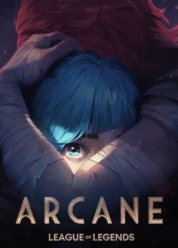
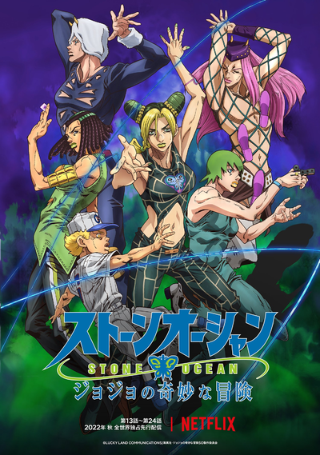

Os mistérios sombrios de uma pequena cidade alemã são expostos quando duas crianças desaparecem. Enquanto as famílias procuram os dois desaparecidos, eles descobrem uma trama de indivíduos conectados com a história conturbada da cidade.
.jpg)
A Terra é habitada por super-heróis que são um inspiração para a humanidade. Porém, esses protetores têm um lado sinistro que a maioria das pessoas desconhece. Se eles usam seus poderes para o mal, Hughie, Billy e o resto do time devem detê-los.

Em meio ao conflito entre as cidades-gêmeas de Piltover e Zaun, duas irmãs lutam em lados opostos de uma guerra entre tecnologias mágicas e convicções incompatíveis.
Cyberpunk: Edgerunners é uma série de anime japonês e polonês do gênero cyberpunk. Ela é baseada no jogo eletrônico Cyberpunk 2077 desenvolvido pela CD Projekt Red. A série foi animada pelo Studio Trigger sob a supervisão da CD Projekt e estreou no serviço de streaming Netflix em 13 setembro de 2022.

JoJo's conta a história da família Joestar, uma família cujos vários membros descobrem que estão destinados a derrubar inimigos sobrenaturais, tais como Dio Brando um vampiro semi-imortal, Yoshikage Kira um serial killer e Diavolo um líder de gangue usando poderes únicos que possuem.
